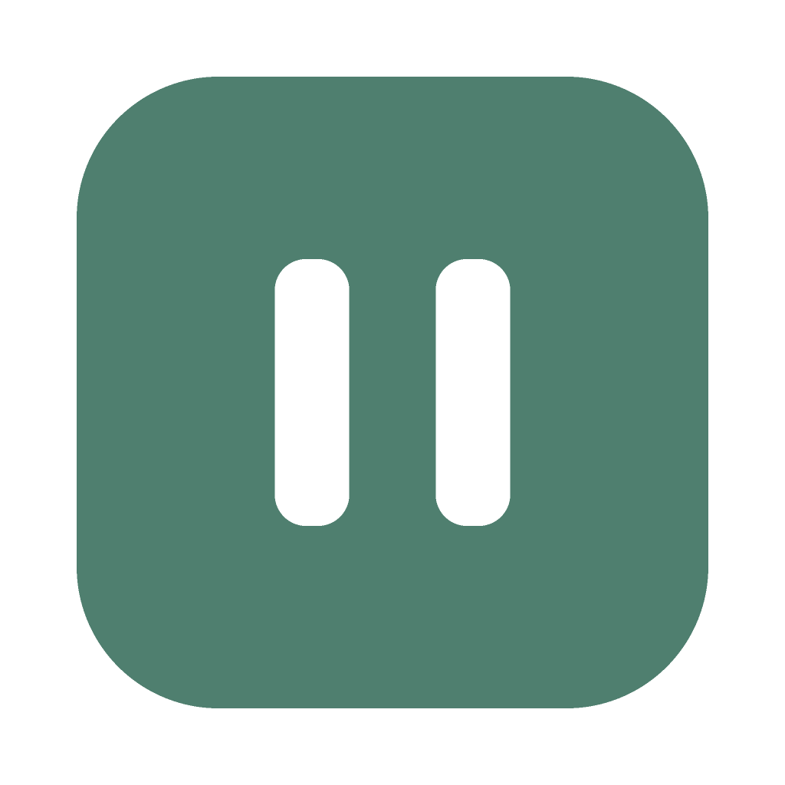
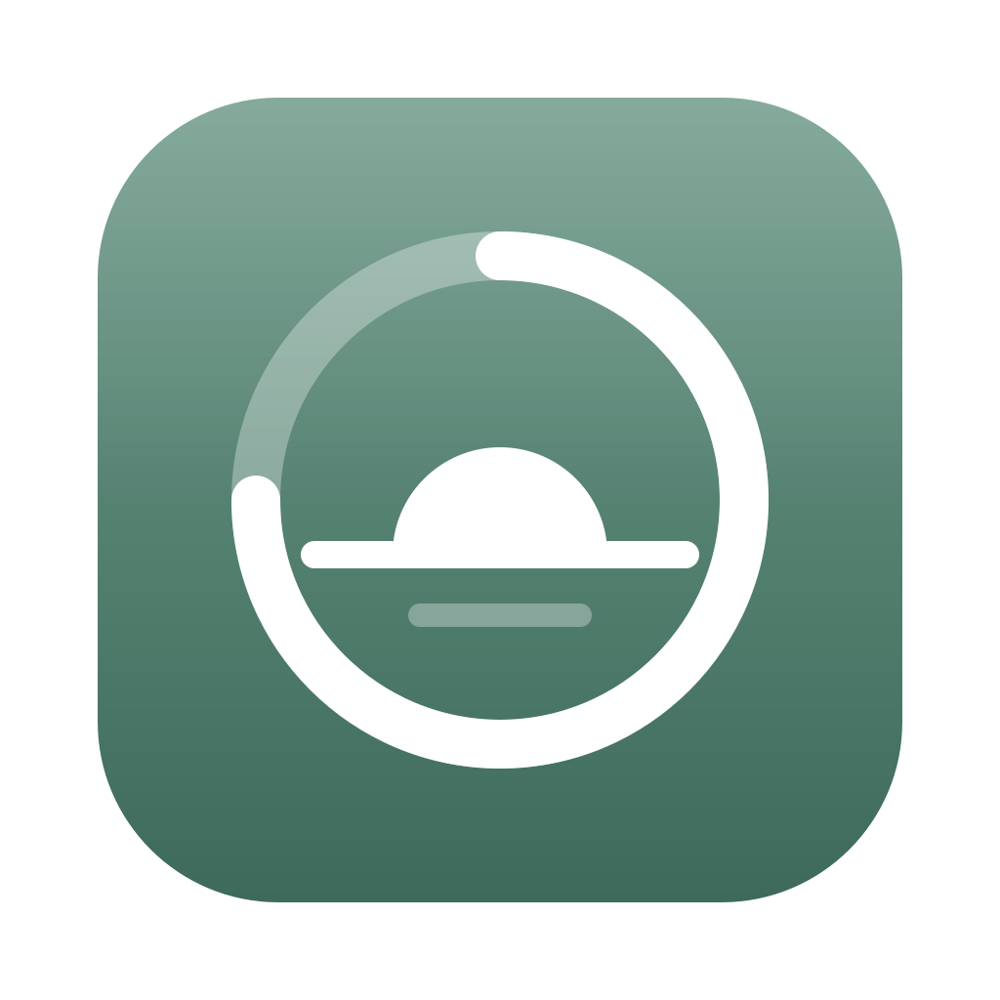

Final direction: Orbit × Dusk. Chosen from six concepts (round 1) and ten variations of Orbit and Dusk (round 2).


The ring is the day. It's the same progress ring as the Glance view, three quarters done.
The sun on the horizon is dusk: the moment to step away, and the leisure that otium means in Latin.
Sage and white carry the app's calm palette, with a soft top-light sheen.